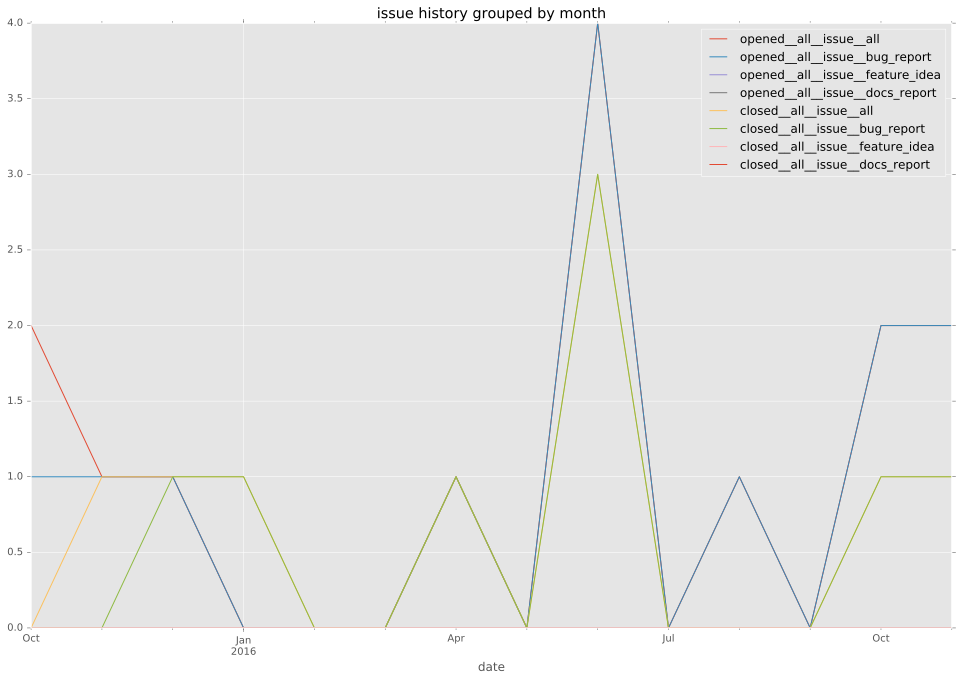
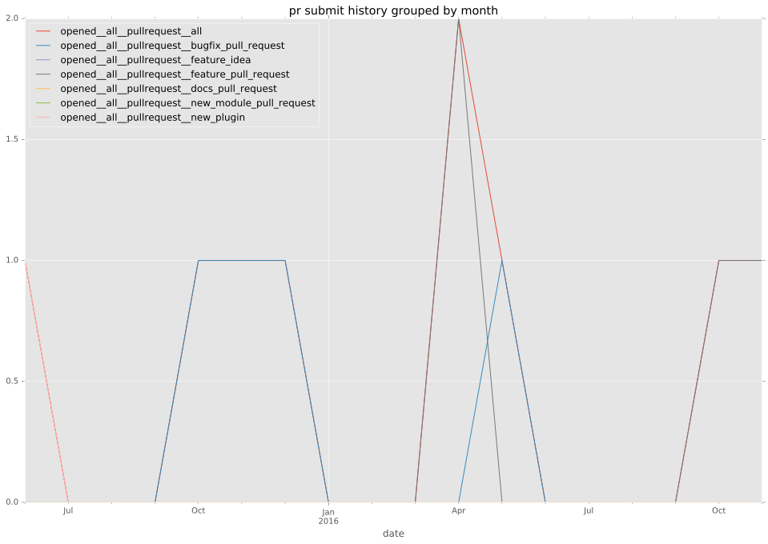
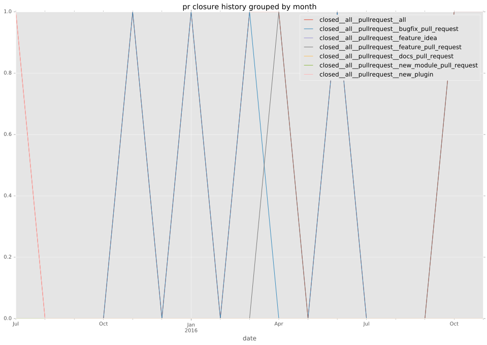

authors
maintainers
- joshludwig
- smadam813
contributors
- jhawkesworth : 15 commits
total issue counts
unknown: 1
feature pull request: 1
pullrequest: 12
bugfix pull request: 8
feature idea: 1
issue: 13
new plugin: 2
bug report: 12
issue history

pullrequest history


days open by issue type
bugfix pull request
count: 13
std: 37.3170752145
min: 0
max: 115
median: 18.0
mean: 24.3076923077
all
count: 28
std: 27.032118854
min: 0
max: 115
median: 4.5
mean: 14.9285714286
pullrequest
count: 0
std: nan
min: nan
max: nan
median: nan
mean: nan
feature pull request
count: 2
std: 0.0
min: 3
max: 3
median: 3.0
mean: 3.0
feature idea
count: 1
std: nan
min: 7
max: 7
median: 7.0
mean: 7.0
issue
count: 0
std: nan
min: nan
max: nan
median: nan
mean: nan
new plugin
count: 3
std: 4.61880215352
min: 0
max: 8
median: 8.0
mean: 5.33333333333
bug report
count: 8
std: 10.1198178979
min: 0
max: 24
median: 4.0
mean: 9.125
closures grouped by total days open